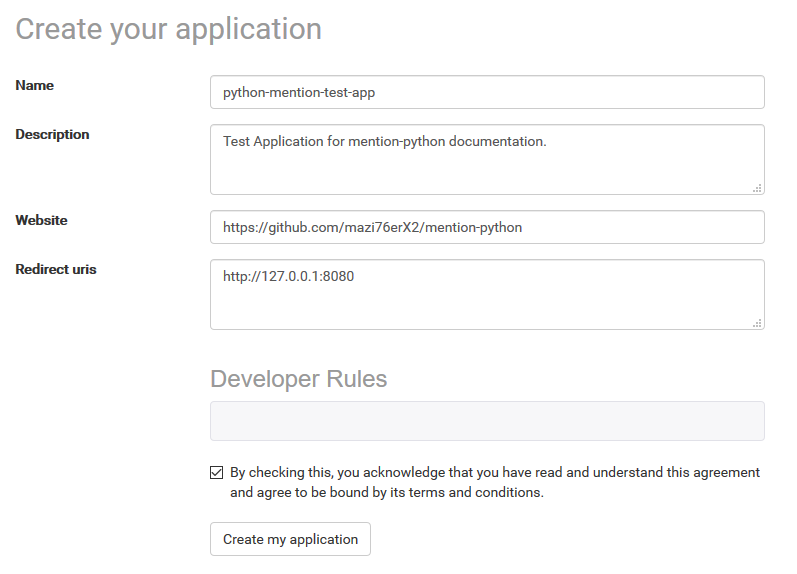
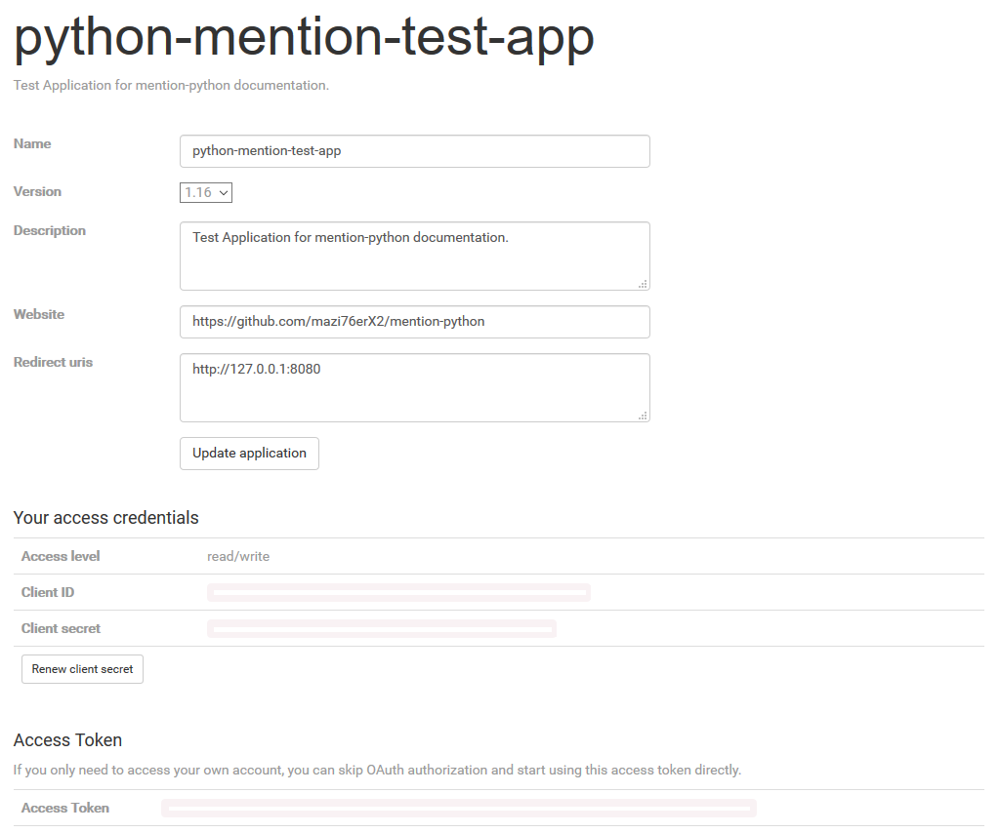
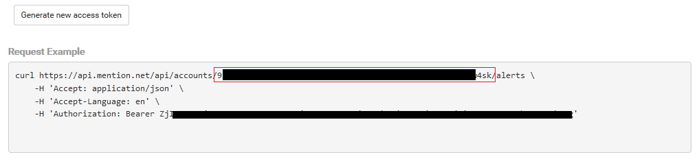

Installation¶
Installation¶
To get started, you’ll need to get an account at Mention.com. Next, you’ll need to obtain your access token so you can make API requests:
Getting your application tokens¶
In order to use the mention-python API client you first need to acquire a access token.
Create your app¶
Create a new Mention App. Login using your mention details, click the “Create a new application” button and fill out the fields on the next page.
On the next screen, you’ll see the applications that you’ve created. Click the “Edit” button to see the application that you created and some information about it:
Your app¶
Once your app is created, you’ll be directed to a new page showing you some information about it.
 Your Keys¶
Take note that the account_id is the string of charaters outlined in red inside the request example seen below:
Lastly, install Python >= 3.6. Now you’re ready to install Mention-Python.
From PyPI
$ pip install mention-python
From source
Install the dependencies:
Alternatively use pip
$ pip install -r requirements.txt
Download the latest mention-python library from: https://github.com/mazi76erx2/mention-python/
Extract the source distribution and run
$ python setup.py build
$ python setup.py install
Getting the code¶
The code is hosted at Github.
Check out the latest development version anonymously with
$ git clone git://github.com/mazi76erX2/mention-python.git
$ cd mention-python
At this point, you can test out your application using the key under “Access Token”. The mention.FetchAnAlerAPI() object can be created as follows:
import mention
alert = mention.FetchAnAlertAPI(access_token='access_token',
... account_id='account_id',
... alert_id='alert_id')